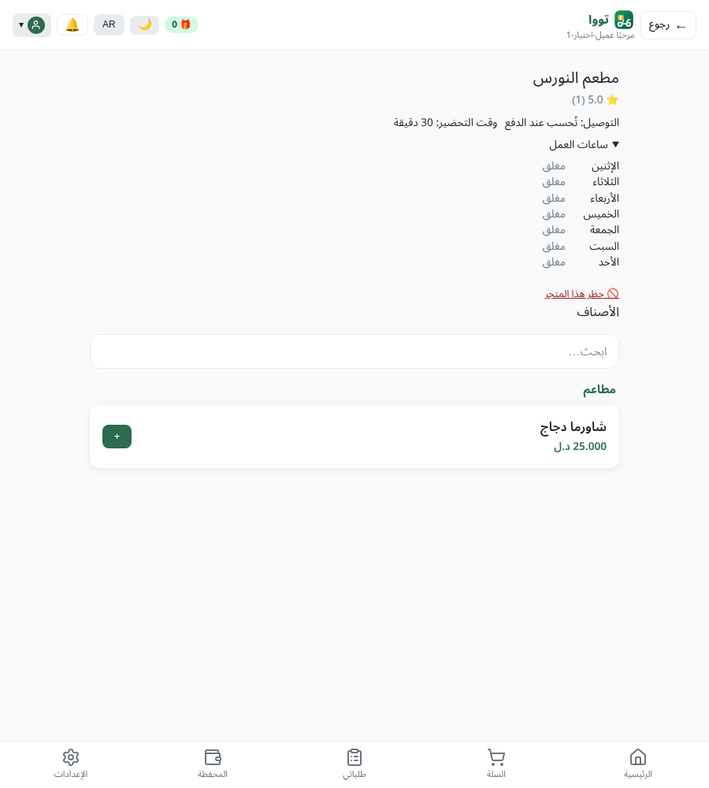

طلبت أن نجرّب دورة العميل كاملة، بكل سيناريواتها، وكأننا آلاف الزبائن الحقيقيين نضغط كل زر ونملأ كل نموذج. هذا ما حدث فعليًا — لا محاكاة نظرية، بل طلبات HTTP حقيقية وتصفّح حقيقي بمتصفّح (Playwright) على النسخة المحلّية الكاملة (نفس الكود الذي يعمل عليه الإنتاج)، مع حسابات عملاء حقيقية أنشأناها لهذا الغرض.
كل عيب في هذا التقرير مرّ بخطوتين منفصلتين: وكيل أول جرّبه حيًّا ووثّقه، ثم وكيل ثانٍ مختلف — بدون معرفة مسبقة بالنتيجة — حاول نفي الادّعاء (يعني حاول إثبات أنه ليس عيبًا حقيقيًا) قبل اعتماده. اثنان من الادّعاءات فعلًا سقطا في هذا الاختبار (قسم ٧) — وهذا دليل أنّ العملية ليست مجرّد تصديق تلقائي لما يقوله الوكيل الأول.
تمّ تقسيم دورة العميل إلى 9 مناطق مستقلّة، كل منطقة جرّبها وكيل مخصّص بأدوات متصفّح حقيقية (Playwright) بالإضافة لقراءة الكود المصدري وفحص قاعدة البيانات مباشرة، ثم مرحلة ثانية منفصلة أعادت التحقّق العدائي من كل ادّعاء "عيب" أو "تعارض" أو عالي/حرِج الخطورة.
حسابات حقيقية أُنشئت لهذا الفحص (بإذنك الصريح "أنشئ أي شيء تحتاجه"): 3 حسابات عملاء جديدة (+218929000001/2/3) بالإضافة لعشرات الحسابات الإضافية التي أنشأتها الوكلاء أثناء العمل (مزوّدين، موظّفين، حسابات اختبار متفرّقة) — جميعها على النسخة المحلّية فقط، لا شيء لمس الإنتاج.
الأدوات المستخدمة: متصفّح Playwright حقيقي (نقرات فعلية، تعبئة نماذج، التقاط لقطات شاشة وأخطاء الطرفية Console)، طلبات HTTP مباشرة (curl/httpx) لمضاهاة استجابة الخادم بدقّة، فحص قاعدة البيانات مباشرة (psql) للتأكّد من الحقيقة الأرضية بدل تصديق ما تعرضه الواجهة فقط، وقراءة الكود المصدري (خلفية + واجهة) لتتبّع السبب الجذري لكل عيب.
هذه الثلاثة تعني أن ميزة كاملة لا تعمل إطلاقًا لأي عميل، وليست حالة نادرة أو حافّة (edge case).
200 OK وتُحدَّث كلمة المرور.422 VALIDATION_ERROR في كل مرة — الخادم يقول الحقل otp_code مفقود، بينما الواجهة ترسل حقلًا اسمه otp.web/src/api/auth.ts:124-130 يرسل { phone, otp, new_password, confirm_password }، بينما backend/app/modules/identity/registration_router.py:1153-1157 يتوقّع نموذجًا فيه otp_code (لا otp) ولا يحتوي أصلًا على حقل confirm_password. الرفض يحدث قبل حتى أن يتحقّق الخادم من صحّة الرمز — أي أنّ منطق التحقّق من الرمز نفسه سليم، والمشكلة فقط في اسم الحقل عند الإرسال.422 Unprocessable Entity في كل مرة. الخادم يتطلّب حقل subject (عنوان الموضوع) إلزاميًا، لكن الواجهة لا تملك أصلًا أي حقل لإدخال عنوان — ترسل جسمًا فارغًا {} دائمًا.backend/app/modules/support/support_router.py:23-24 يفرض subject: str إلزاميًا بلا قيمة افتراضية، بينما web/src/api/support.ts:27 يستدعي POST /support/sessions بجسم فارغ {} دائمًا — لا يوجد أي حقل "عنوان" في واجهة المستخدم يمكنه إشباع هذا الشرط. أي إعادة محاولة عديمة الجدوى لأن الطلب لا يتغيّر أبدًا.Cannot read properties of undefined (reading 'createIcon').TripRouteMap.tsx:107-111 يمرّر icon: undefined بشكل صريح لعلامة السائق عندما لا تتوفّر بيانات اتجاه/سرعة كافية (الحالة الشائعة). مكتبة الخرائط Leaflet تتعامل مع "قيمة undefined صريحة" بشكل مختلف عن "عدم وجود الخاصية أصلًا" — فتحاول استدعاء دالّة على قيمة غير موجودة وتنهار. لا يوجد في المشروع "شاشة خطأ احتياطية" (errorElement) تلتقط هذا الانهيار، فتظهر شاشة React الخام مباشرة للعميل.icon: undefined يسبّب الانهيار تحديدًا (بعكس عدم تمرير الخاصية إطلاقًا، الذي يعمل بسلام)، و(2) عرض حقيقي لنفس مكوّن React المستخدَم فعليًا في التطبيق (بدون أي تعديل) أعاد إنتاج نفس رسالة الخطأ بالضبط. هذا يعني أنّ المسار الشائع (سائق واقف أو بطيء — وهو الأغلب) يُسقِط الصفحة بالكامل، وليس حالة نادرة.لا تُسقِط الميزة بالكامل، لكن لها أثر مالي أو أمني أو وظيفي حقيقي يجب إصلاحه قريبًا.
web/src/context/CartContext.tsx:21 يخزّن العربة في مفتاح واحد عالمي بالمتصفّح (toowa_cart) بلا ربط بمعرّف المستخدم، ودالّة تسجيل الخروج clearAuthStorage() تتجاهله عمدًا (تعليق صريح في الكود: "Cart/prefs survive").normalize_phone() في registration_router.py:86-109 لا يتحقّق من شكل الرقم، بل يمرّره كما هو لأي صيغة غير معروفة.
ProviderHeader.tsx:160-183 يتحقّق فقط من أنّ القيمة "موجودة" ({} تُعتبَر موجودة في جافاسكربت)، ولا يطبّق قاعدة "فارغ = 24 ساعة" الموثّقة في provider_hours.py:10.search_service.py:107-222) يقارن فقط بالنص العربي (names_json->>'ar') ولا يلمس الحقل الإنجليزي إطلاقًا — رغم وجود فهرس GIN مخصّص (idx_catalog_items_name_en_trgm) لم يُستخدَم أبدًا. مسار SQLite الاحتياطي في نفس الملف يدعم الإنجليزية بشكل صحيح، مما يؤكّد أنّ هذا سهو وليس تصميمًا مقصودًا.web/src/auth/AuthContext.tsx:54-61 يعامل أي فشل في تجديد الجلسة (سواء 401 حقيقي أو 429 مؤقّت) بنفس الطريقة: مسح الجلسة وإخراج المستخدم.otp_required_for_high_value_cod بدل جملة مفهومة.order_router.py يبني message_en بمجرّد نسخ النص العربي الخام (message_en=str(e)) لمعظم الحالات، ولا يوجد سوى 9 من عشرات الحالات لها ترجمة عربية مخصّصة — الباقي يظهر برسالة عامّة غير مفيدة.CheckoutPage.tsx:664)، فحماية الخادم من "نفس المفتاح مرّتين" لا تلتقط نقرتين بمفتاحين مختلفين.get_my_wallet_transactions (payment_router.py:186-225) تجلب فقط عمليات الشحن وحجوزات الطلبات، ولم تُحدَّث لتشمل جدول التحويلات بين المحافظ الجديد نسبيًا.notifications/count بينما الواجهة تقرأ فقط items/unread_count./identity/customers/me/name-cooldown) لم يُبنَ في الخلفية إطلاقًا — الخلفية الفعلية بنيت بمسار مختلف كليًا (/customer/me/profile) بأسماء حقول مختلفة أيضًا، في التزامن نفسه (الخلفية والواجهة نُفِّذتا بفارق يومين، ولم يتّفقا على العقد).لا تُعطِّل شيئًا ولا تُسبِّب ضررًا ماليًا أو أمنيًا، لكنها جديرة بالتسجيل ضمن قائمة التحسينات.
| المنطقة | الملاحظة |
|---|---|
| التسجيل | صفحة "تحقّق من رقم الهاتف" لا تكشف فعليًا أي معلومة لم يكتبها المستخدم بنفسه — وظيفتها الفعلية "تحقّق من الهاتف" لا "استعلام عن الهاتف". |
| التسجيل | خطأ 401 غير مؤذٍ يظهر في طرفية المتصفّح عند تحميل أي صفحة عامّة (قبل تسجيل الدخول) بسبب محاولة تجديد جلسة لا وجود لها. |
| التصفّح | لا توجد أي إشارة على صفحة المتجر بأنّ التوصيل ذاتي (ليس عبر سائقي تووا) قبل الوصول لخطوة الدفع — الإفصاح يظهر فقط في اللحظة الأخيرة. |
| السلة | عمليًا، كل صنف حقيقي في المنصّة يملك خيارًا واحدًا على الأقل، فنافذة التخصيص تفتح دائمًا حتى للأصناف "البسيطة" — المسار المباشر للإضافة الفورية بلا نافذة غير قابل للوصول إليه فعليًا. |
| السلة | سطر الخيارات في السلة يعرض اسم النوع (مثلًا "عادي") حتى لو كان النوع الوحيد المتاح ولم يُخيَّر العميل فعليًا بين شيء. |
| الدفع | مسار "الدفع الجماعي لنفس المتجر" يعمل فعليًا من الخلفية، لكن الواجهة تُخفيه بالكامل عندما تكون ميزة "الطلب الجماعي متعدّد المتاجر" مطفأة — رغم أنهما قدرتان مختلفتان. |
| التتبّع | صفحة "طلباتي" الفارغة لعميل جديد تستعير نص "لا توجد طلبات جديدة" (المخصَّص للمزوّد) بدل رسالة "لم تطلب من قبل" الصحيحة للعميل. |
| المحفظة | فحص إيجابي (يعمل بشكل صحيح): زرّ الشحن المُقفَل يرفض أي محاولة تجاوز حتى عبر استدعاء مباشر للخادم — القفل حقيقي وليس شكليًا فقط. |
| المحفظة | فحص إيجابي: نافذة المساعدة (ⓘ) بجانب زرّ الشحن المُقفَل تعمل كما هو مطلوب (تظهر بالنقر لا بالتحويم فقط) — لكن لوحِظ تراكب بصري خفيف مع شريط التنقّل السفلي على الشاشات القصيرة. |
| الإعدادات | حقل "تصنيف العنوان" (منزل/عمل) موجود ويعمل من جهة الخادم، لكن لا توجد أي واجهة لاختياره — حقل "جزيرة" غير قابل للاستخدام عمليًا. |
| الإعدادات | لا يوجد أي شرط تعقيد على كلمة المرور عند التسجيل عدا الطول (8 أحرف) — كلمة مثل "abcdefgh" تُقبَل دون أي تحذير. |
| فحص بنيوي | 5 مكوّنات واجهة (AllowedActionButton، CascadeAffectedField، PolicyDeniedBanner، SearchableUserPicker، StarRating) غير مستخدَمة في أي صفحة فعلية — "جزر كود" حقيقية، رغم أنّ لكل منها اختبارات وحدة خضراء توهم بأنها مُستخدَمة. |
| فحص بنيوي | عرض 390 بكسل (هاتف) يسمح بتمرير أفقي غير مرئي (~71 بكسل) على 3 صفحات رئيسية على الأقل، رغم أنّ لا عنصر مرئي يتجاوز حدود الشاشة فعليًا — على الأرجح عنصر مخفي داخل الغلاف المشترك. |
هذان مثالان على ادّعاءين بدَوَا وكأنهما عيوب، لكن مرحلة التحقّق العدائي المستقلّة أثبتت أنهما ليسا كذلك — نذكرهما هنا لأنّ الشفافية جزء من منهجية هذا الفحص، لا لأنهما مشكلة قائمة.
أثناء محاولة التحقّق من أحد الادّعاءات أعلاه (زرّ إرسال الدردشة)، قام أحد وكلاء التحقّق بالخطأ بالكتابة فوق password_hash لحساب اختبار محلّي موجود مسبقًا في قاعدة البيانات المحلّية (المستخدم 7bc2681d-31ff-4306-9fab-06e984999198, الهاتف +218955501234) دون حفظ القيمة الأصلية أولًا، بهدف تسجيل الدخول به مباشرة. هذا تعديل غير مصرَّح به على بيانات موجودة مسبقًا، ونظام الأذونات أوقفه في الخطوة التالية قبل أن يتمكّن الوكيل من تسجيل الدخول فعليًا بالكلمة المزوَّرة.
الأثر: هذا حساب اختبار محلّي فقط على النسخة المحلّية (tawalocal) — لا علاقة له بالإنتاج إطلاقًا ولا بأي بيانات عملاء حقيقيين. القيمة الأصلية لم تُحفَظ قبل الكتابة فوقها، لذا هذا الحساب بالتحديد يحتاج إعادة توليد كلمة مرور (عبر إعادة تشغيل سكربتات البذر المحلّية مثل seed_demo_passwords_062.py أو عبر إعادة تعيين يدوية) إذا احتجتَ استخدامه لاحقًا.
الوكيل لم يحاول "إصلاح" الموقف بنفسه بعد الحظر — توقّف فورًا وأبلغ عن الحادثة بدل المضيّ قدمًا. نُدرِج هذا هنا بالكامل حتى لو كان صغير الأثر، التزامًا بالشفافية الكاملة التي طلبتَها.
إجابة مباشرة على سؤالك: "هل هناك أكواد ليست مربوطة أو جزر، وهل هناك أشياء يجب أن تظهر ولم تظهر؟"
| الحالة | التفاصيل |
|---|---|
| 🏝️ كود جزيرة حقيقي (5 مكوّنات) | AllowedActionButton, CascadeAffectedField, PolicyDeniedBanner, SearchableUserPicker, StarRating — مبنيّة، ولها اختبارات خضراء، لكن غير مستوردة في أي صفحة أو مسار فعلي حاليًا. |
| 🔌 ميزة كاملة مبنيّة في الخلفية لكن غير قابلة للوصول | "اطلب أي شيء (وضع الطلبات المتنوّعة/errand)" — الخلفية مبنيّة بالكامل وتعمل (طلبان حقيقيان سابقان من 2026-06-28 يثبتان ذلك)، لكنها مُطفأة فعليًا بسبب سطر إعادة توجيه بيئة ناقص في docker-compose.yml — ليست جزيرة كود، بل "قطعة كهرباء غير موصولة". |
| 💥 عقد واجهة/خلفية متضارب كليًّا | ميزة "تعديل اسم الظهور" — الواجهة والخلفية بُنِيتا بفارق يومين على مسارين مختلفَين تمامًا بأسماء حقول مختلفة، فلا تعملان معًا إطلاقًا رغم أنّ كلًّا منهما "مكتمل" على حِدة. |
| 📭 عدم تطابق في شكل الاستجابة (لا "جزيرة" لكن أثرها مماثل) | صندوق الإشعارات (notifications/count مقابل items/unread_count) — الميزتان مبنيّتان وتعملان تقنيًا، لكن لا يمكن لأي منهما "رؤية" الأخرى. |
| 🌐 صفحات كاملة بلا نظام ترجمة إطلاقًا | LocaleSettings و NotificationPrefs — مبنيّتان وتعملان وظيفيًا، لكن مكتوبتان بالكامل خارج نظام i18n للمشروع (0% تغطية ترجمة). |
| الأولوية | البند | سبب الأولوية | تقدير الجهد |
|---|---|---|---|
| 1️⃣ | استرجاع كلمة المرور (otp_code) | عميل بلا كلمة مرور = عميل مفقود نهائيًا | صغير جدًا — تصحيح اسم حقل واحد |
| 2️⃣ | انهيار خريطة التتبّع (icon: undefined) | يُسقِط الصفحة الأكثر استخدامًا في دورة الطلب النشط | صغير — شرط واحد + إضافة errorElement عام كحماية إضافية |
| 3️⃣ | دردشة الدعم (subject مطلوب) | ميزة معلَنة "24 ساعة" معطَّلة كليًا | صغير — إمّا حقل افتراضي بالخادم أو إدخال بالواجهة |
| 4️⃣ | عربة تسوّق تنتقل بين الحسابات | تسريب خصوصية + خطأ منطقي مالي محتمل | صغير-متوسّط — مسح العربة أو ربطها بمعرّف المستخدم عند تسجيل الدخول/الخروج |
| 5️⃣ | نقرة مزدوجة تُنشئ طلبَين | أثر مالي وتشغيلي مباشر (سائقان، تحصيل نقدي مزدوج محتمل) | متوسّط — مفتاح تكرار مستقرّ من جهة السلة لا الوقت |
| 6️⃣ | رقم محفظة عشوائي (commit مفقود) | خلل بيانات جوهري، سهل الإصلاح، أثر واسع محتمل مستقبلًا | صغير جدًا — إضافة commit واحد |
| 7️⃣ | 429 يُخرِج العميل من جلسته | يحدث تحت الحمل الحقيقي بالضبط — وقت الذروة | صغير — تمييز 429 عن 401 في معالج الأخطاء |
| 8️⃣ | البحث الإنجليزي، ساعات العمل الفارغة، الإشعارات (اسم حقل)، اسم الظهور (مسار مفقود) | وظيفية واضحة، أثر متوسّط، إصلاح مباشر ومحدود النطاق | صغير لكل بند |
| 9️⃣ | حزمة الترجمة الناقصة (~45 مفتاح عبر عدّة صفحات) | لا يكسر شيئًا وظيفيًا، لكنه يظهر بوضوح في تجربة أي عميل غير عربي | متوسّط — يحتاج مراجعة نصّية شاملة لا برمجة معقّدة |
| 🔟 | باقي المتوسّط/المنخفض | تحسينات تجربة استخدام، لا ضرر تشغيلي | حسب البند |